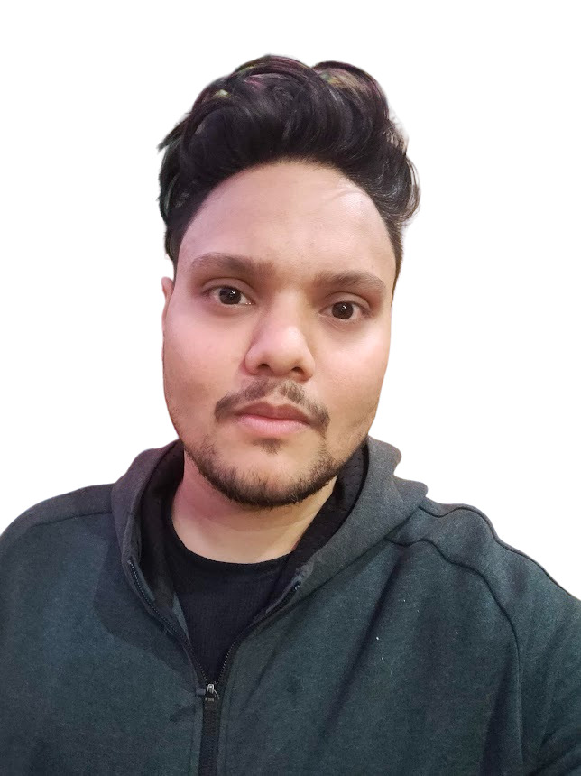

Shobhit Rawat

Summary
Seeking a challenging role in a reputed organization where I get hands-on knowledge and ample
opportunities to utilize my potential to the best of my ability.
Education
-
MBA | Marketing: Completed Masters in Business Administration (Marketing) from Graphic Era
Hill University with an 8.38 CGPA.
-
BCA: Graduated in Computer Applications from HNB Garhwal University with a 7.77 CGPA.
Work Experience
Delhivery Pvt. Limited, New Delhi • Team leader
03/2024 - 04/2024
-
Managed Logistics Operations (including floor operations/ client escalations) for Inbound
and outbound shipments
-
Manpower management to enable timely connections and metrics.
-
Supporting the team in floor operations, motivating and conducting the shift briefing the
Loaders & unloaders; ensuring the smooth running of the center/DC/SC/Facility
Independent Contractor, Remote • Personalized Internet Assessor
08/2017 - 04/2020
-
Creating quantitative measurements for evaluating the relevancy of search results
-
Evaluating different types of search results like videos, images, news, and others
-
Providing contextual feedback to design and back-end teams
Skills
- Team spirit: ★★★★
- Leadership skills: ★★★
- Quick learner: ★★★★
- Good interpersonal and intrapersonal skills: ★★★★
Awards and Certifications
- Secured 1st position in the Indo-German Cultural Society Debate Competition at School
Level.
-
Won a gold medal in the National Science Talent Search Examination for scoring the
Highest marks in the school.
Other